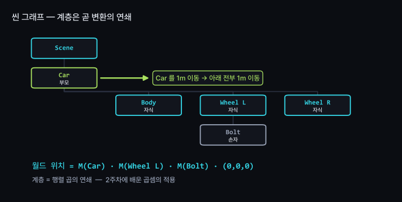
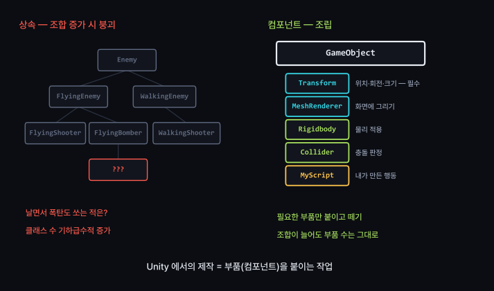
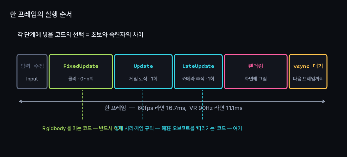
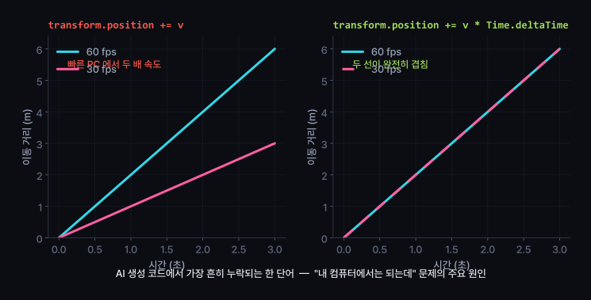
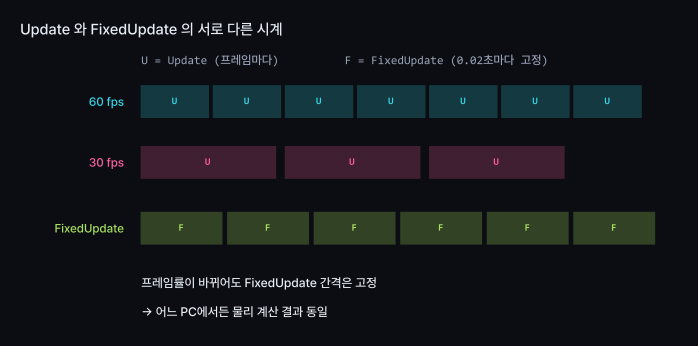
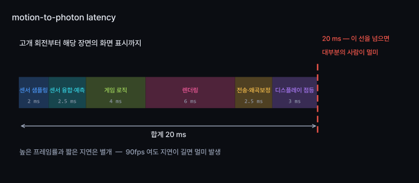
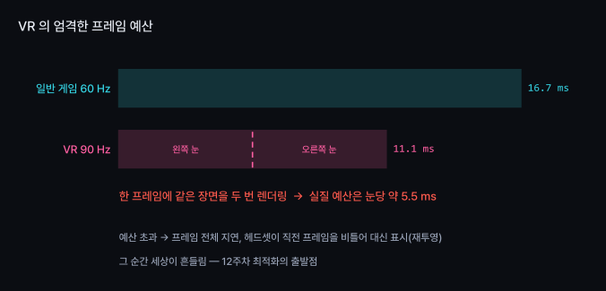

씬 · 게임오브젝트 · 컴포넌트 구조, C# 스크립팅 입문
Unity에서의 제작 = 부품(컴포넌트) 조합
AI가 빠뜨리는 단어 하나 → 게임 속도가 PC 성능에 종속
프레임 드랍 : 일반 게임은 불편, VR은 구역질
게임오브젝트, 컴포넌트, 초당 60번 반복되는 게임 루프
Unity의 GameObject : 자체 기능 없음
이름과 위치만 가진 빈 상자
화면에 표시 → MeshRenderer 추가
낙하 → Rigidbody 추가
Unity에서의 제작 = 필요한 부품을 골라 붙이는 과정
디자인 툴에서 레이어에 효과를 얹는 방식과 유사


using UnityEngine;
public class Spinner : MonoBehaviour // ← 이 상속이 "부품 자격증"이다
{
public float speed = 45f;
void Start() { } // 씬에 등장할 때 한 번
void Update() { } // 매 프레임
}
MonoBehaviour 상속 → 인스펙터에 붙일 수 있는 부품
public 변수 → 인스펙터에 입력칸으로 노출
루프가 초당 60번 반복 · 한 바퀴 = 한 프레임
Update() = 루프 한 바퀴에 끼워 넣는 내 코드
무거운 코드 → 게임 전체 속도 저하

| 함수 | 호출 시점 | 용도 |
|---|---|---|
Awake | 객체 생성 직후 1회 | 자기 자신 초기화, 컴포넌트 캐싱 |
Start | 첫 Update 직전 1회 | 다른 객체를 참조하는 초기화 |
FixedUpdate | 0.02초마다 고정 | Rigidbody 를 미는 모든 코드 |
Update | 매 프레임 | 입력 처리, 게임 규칙, 타이머 |
LateUpdate | 모든 Update 후 | 카메라 추적, 다른 대상을 따라가는 코드 |
카메라 추적을 Update 에 넣으면 화면이 미세하게 떨림
원인 : 추적 대상이 아직 이동 전일 가능성 → 실행 순서를 알아야 해결 가능
한 프레임에 걸리는 시간은 매번 다름
"매 프레임 1cm 이동" 방식 → 속도가 프레임률에 종속
좋은 PC = 빠른 캐릭터 → 도입 질문의 답

빨강 = position += v · 초록 = position += v * Time.deltaTime · 60fps 에서만 두 줄이 동시에 도착
이 함정은 화면에서 잘 드러나지 않음 — 개발자 PC에서는 정상 동작
프레임률을 바꿔 측정해야 확인 가능 → 오늘 배울 검증법

| 속성 | 의미 | 용도 |
|---|---|---|
Time.deltaTime | 지난 프레임이 걸린 시간 | Update 안의 모든 이동·회전 |
Time.fixedDeltaTime | 항상 0.02초 (고정) | FixedUpdate 안 |
Time.time | 게임 시작 후 흐른 총 시간 | 주기적 동작, 애니메이션 위상 |
FixedUpdate 안에서 Time.deltaTime 사용 시
Unity가 자동으로 fixedDeltaTime 값 반환
헷갈리면 deltaTime 사용 — 두 경우 모두 정상
// 나쁨 — 매 프레임 컴포넌트를 새로 찾는다
void Update() {
GetComponent<Rigidbody>().AddForce(Vector3.up);
GameObject.Find("Player").transform.position = p; // 더 나쁨
}
// 좋음 — 한 번 찾아서 들고 있는다
Rigidbody rb;
void Awake() { rb = GetComponent<Rigidbody>(); }
void FixedUpdate() { rb.AddForce(Vector3.up); }
Find : 씬 전체 탐색 → 오브젝트 1,000개면
매 프레임 1,000번 비교
60fps 기준 초당 6만 번
프레임 드랍 : 일반 게임은 불편, VR은 멀미 증상
고개를 돌린 그 순간의 장면은 아직 렌더링 전
센서 읽기 → 계산 → 렌더링 → 화면 점등까지 시간 소요
모니터 게임 : 지연을 손이 감지 — 입력 반응 지연
VR : 지연을 전정계가 감지 — 세상이 미끄러짐
2주차 감각 충돌과 같은 원리 · 이번 원인은 시간

청록 = 실제 머리 방향 · 분홍 = 화면에 표시되는 방향 · 빨강 = 두 방향의 차이

프레임 지연 → 늦게 표시
화면이 잠깐 끊김 — 불편한 수준
헤드셋은 대기하지 않음
직전 프레임을 비틀어 대신 표시 (재투영)
그 순간 세상이 미끄러짐
재투영 = 구조를 지키는 안전장치, 성능 보완 수단으로 부적합
자주 발생 시 사용자는 원인을 모른 채 "이 게임 하면 어지럽다" 는 반응
VR의 Update() :
11.1ms 예산 안에서 실행
11.1ms 안에 게임 로직 · 물리 · 두 번의 렌더링 전부 포함
Find 하나, 정렬 한 번 → 프레임 지연 유발
«일단 동작하게 만들고 나중에 최적화» 방식이 VR에서 통하기 어려운 이유
이번 주 핵심 : 검증 조건 작성법
이번 주 집중 : 세 번째 칸
지난주 함정(짐벌락) : 화면에서 확인 가능
이번 주 함정(deltaTime) : 화면에서 확인 불가
보이지 않는 결함 → 측정 방법을 미리 정하지 않으면 발견 불가
// 프레임률을 강제로 낮춰서 같은 코드를 두 번 돌린다
void Awake() {
QualitySettings.vSyncCount = 0; // vsync 를 꺼야 먹힌다
Application.targetFrameRate = 30; // 그 다음 30 / 120 으로 바꿔가며
}
// 10초 뒤 위치를 찍어서 비교한다
void Start() { Invoke(nameof(Report), 10f); }
void Report() { Debug.Log($"{Application.targetFrameRate}fps → {transform.position}"); }
30fps 와 120fps 에서 10초 뒤 위치 비교
같으면 통과, 다르면 deltaTime 누락 → 이것이 검증 조건
| # | 실습 | 확인할 개념 |
|---|---|---|
| 1 | AI에게 검증 조건 없이 회전·이동 스크립트 요청 · 첫 응답의 deltaTime 포함 여부 확인 |
명세의 빈틈 |
| 2 | 위 측정 코드로 30fps / 120fps 비교, 결함 확인 | 보이지 않는 결함의 측정 |
| 3 | 검증 조건을 넣어 다시 요청, 응답 차이 비교 | 명세에 따른 결과 변화 |
| 4 | 공을 Update 와 FixedUpdate 에서 각각 밀어 차이 비교 |
고정 타임스텝 |
| 5 | 카메라 추적을 Update 와 LateUpdate 양쪽에 넣어 떨림 재현 (확장) |
실행 순서 |
1~4 필수, 5 확장 · 제출물 없음, 수업 안에서 완료
[목표]
큐브를 월드 Z축 방향으로 초당 3m 등속 이동시킨다.
[제약]
- 프레임률과 무관하게 같은 속도일 것
- Rigidbody 는 쓰지 않는다 (Transform 직접 이동)
[검증 조건]
- vSyncCount=0 으로 두고 targetFrameRate 를 30 과 120 으로 바꿔
각각 10초 뒤 position.z 를 로그로 찍었을 때
두 값의 차이가 0.1m 이내일 것
[비목표]
- 입력 처리, 충돌, UI 는 만들지 말 것
[검증 조건]에 숫자와 방법 포함
«잘 동작할 것» 은 검증 조건으로 부적합
| 개념 | 핵심 |
|---|---|
| 게임오브젝트 | 빈 상자 · 부품을 붙여야 기능 발생 |
| 컴포넌트 | 상속 대신 조합. 조합이 늘어도 부품 수는 그대로 |
| 씬 그래프 | 계층 = 행렬 곱의 연쇄 · 부모 이동 시 자식 전체 이동 |
| 게임 루프 | Update = 초당 60번 반복되는 루프에 끼워 넣는 내 코드 |
| 실행 순서 | 물리는 FixedUpdate, 추적은 LateUpdate |
| deltaTime | 누락 시 PC 성능이 곧 게임 속도. AI가 가장 자주 빠뜨림 |
| 검증 조건 | 보이지 않는 결함 → 측정 방법을 미리 정해야 발견 |
| motion-to-photon | 높은 프레임률과 짧은 지연은 별개. 20ms가 경계 |
| VR 예산 | 90Hz = 11.1ms. 그 안에 두 눈 모두 렌더링 |
정점 하나가 화면의 픽셀이 되는 과정
HMD 렌즈를 위해 그림을 미리 일그러뜨리는 이유